⭐ 생각열기 |
동전을 두 번 던지면 나타날 수 있는 표본공간은 다음과 같다.
|
💎 탐구 |
표본공간에 대한 여러 가지 사건 중에서 어떠한 사건의 확률이 현실에서 많이 이용될까? |
3장 확률변수와 확률분포
🎯 🎲 🎰 🎮3.1 확률변수 |
우리 일상생활에서 일정한 유형의 사건에 대한 확률 계산이 많이 이용된다. 확률변수가 무엇인지 알아보고 특히 많이 이용되는 이항분포와 정규분포의 확률계산에 대하여 알아본다. |
3.1 확률변수
두 가지 결과가 나오는 한 시행을 여러 번 반복할 때 한 결과가 나오는 횟수를 세어 보는 것은 우리 주변에서 자주 관찰된다.
- 공장에서 생산되는 제품에서 10개를 골라 각각 ‘우량’ 또는 ‘불량’인지를 판정하여 불량품의 개수를 센다
- 한 선거에서 10명의 유권자에게 특정후보를 좋아하는지 싫어하는지 조사하여 좋아하는 사람의 수를 센다.
표본공간의 여러 가지 사건에 대해 확률을 구할 수 있지만 그 중에서도 우리가 더욱 관심이 있는 것은 다음과 같은 앞면이 나오는 횟수에 대한 사건들과 그 확률이다.
| 앞면이 한번도 안 나오는 사건 | [TT] | P({TT}) = \(\frac{1}{4}\) |
| 앞면이 한번만 나오는 사건 | {TH, HT} | P({TH, HT}) = \(\frac{2}{4}\) |
| 앞면이 두 번 나오는 사건 | {HH} | P({HH}) = \(\frac{1}{4}\) |
이때 \(X\)를 동전의 앞면이 나온 횟수라고 하면 \(X\)의 값으로 가능한 수는 0, 1, 2가된다. 즉 \(X\)는 표본공간 \(S\)의 각 원소에 다음과 같이 하나의 수를 대응한 것이다.
| 표본공간 | \(X\) = 동전의 앞면이 나온 횟수 |
|---|---|
| {TT} | 0 |
| {TH} {HT} | 1 |
| {HH | 2 |
이와 같이 어떤 시행에서 표본공간의 각 원소에 단 하나의 실수를 대응시킨 관계를 확률변수 라고 한다. 확률변수는 대개 알파벳 대문자 \(X, Y, Z \) 등으로 표시하고, 확률변수의 값은 소문자 \(x, y, z \)등으로 표시한다. 확률변수가 가질 수 있는 값이 유한개이거나 자연수와 같이 셀 수 있을 때 그 확률변수를 이산확률변수라 하고, 어떤 범위에 속하는 임의의 실수 값을 가질 때, 그 확률변수를 연속확률변수라고 한다. 예를 들어 동전을 두 개 던져 나타나는 겉면의 수 \(X\)는 이산확률변수이고, 피자를 주문해서 집에 도착할 때까지 걸리는 시간을 \(Y\)라 하면 \(Y\)는 임의의 양의 실수 값을 가질 수 있으므로 연속확률변수가 된다.
🎲 예제 3.1
『다음 시행에서 확률변수 \(X\)가 이산확률변수인지 연속확률변수인지 구분하라
1) 한 교차로에서 하루에 발생하는 사고의 수 \(X\)
2) 우리반 학생들의 신장 \(X\)
풀이
1) 교차로에서 발생하는 사고의 수는 0, 1, 2, 3, ... 등의 자연수이므로 한 교차로에서
발생하는 사고의 수 \(X\)는 이산확률변수이다.
2) 우리 반 학생들의 신장은 대개 160cm에서 200cm 사이의 임의의 실수 값을 가지므로
연속확률변수이다.
⏱ 문제 3.1
|
다음 시행에서 확률변수 \(X\)가 이산확률변수인지 연속확률변수인지 구분하라
1) 한 해에 우리니라를 통과하는 태품의 수 \(X\) |
3.2 이산확률변수의 확률분포
⭐ 생각열기 |
동전을 두 번 던질 때 \(X\)를 동전의 앞면이 나온 횟수라고 하면 \(X\)의 값으로 가능한 수는 0, 1, 2이다. |
💎 탐구 |
\(X\)의 값으로 가능한 수 0, 1, 2에 대한 확률을 모두 표로 정리해보면 어떨까?
|
확률변수 \(X\)를 동전을 두 번 던졌을 때 나오는 앞면이 나온 횟수라고 하면 앞면이 한 번도 안 나오는 사건의 확률 P({TT}) = \(\frac{1}{4}\)은 \(P(X=0) = \frac{1}{4}\)로 표시할 수 있다. 마찬가지로 한 번 나오는 사건의 확률 P({TH, HT}) = \(\frac{2}{4}\)는 \(P(X=1) = \frac{2}{4}\)로 표시할 수 있고, 두 번 나오는 사건의 확률 P({HH}) = \(\frac{1}{4}\)는 \(P(X=2) = \frac{1}{4}\)로 표시할 수 있다. 이것을 표로서 정리하면 다음과 같다.
| 표본공간 | \(X\) = 동전의 앞면이 나온 횟수 | \(P(X=x)\) |
|---|---|---|
| {TT} | \(x = 0\) | \(\frac{1}{4}\) |
| {TH} {HT} |
\(x = 1\) | \(\frac{2}{4}\) |
| {HH} | \(x = 2\) | \(\frac{1}{4}\) |
이 표와 같이 이산확률변수 \(X\)가 어느 한 값 \(x\)를 가질 확률 \(P(X=x)\)을 모두 정리한 것을 확률분포라고 한다. 위의 확률분포는 <그림 3.1>과 같이 그래프로 나타낼 수 있다.

<그림 3.1> 이산확률변수의 확률분포
일반적으로 이산확률변수 \(X\)가 가질 수 있는 값이 \(x_1 , x_2 , \cdots , x_n\)이고 각각의 값을 가질 확률이 \(p_1 , p_2 , \cdots , p_n\)일 때 대응 관계를 다음과 같이 나타낼 수 있다.
| \(X\) | \(x_1\) | \(x_2\) | \(\cdots\) | \(x_n\) | 합계 |
|---|---|---|---|---|---|
| \(P(X=x_i )\) | \(p_1\) | \(p_2\) | \(\cdots\) | \(p_n\) | 1 |
그리고 이 대응관계를 나타내는 함수
\(P(X=x_i ) = p_i \)
를 이산확률변수 \(X\)의 확률밀도함수 또는 확률분포함수라고 한다.
이산확률변수 중에서 현실에서 많이 이용되는 것이 이항분포로서 3.4절에서 자세히 살펴본다.
확률의 기본 성질에 의하여 이산확률변수의 확률밀도함수는 다음과 같은 성질을 갖는다.
✨ 확률밀도함수의 성질
이산확률변수 \(X\)의 확률밀도함수 \(P(X = x_i ) = p_i\) (\(i=1,2, ... , n\))는 다음과 같은 성질을 같는다
1) \( 0 \le p_i \le 1\)
2) \( p_1 + p_2 + \cdots + p_n = 1\)
2) \( p_1 + p_2 + \cdots + p_n = 1\)
확률변수 \(X\)가 \(a\)이상 \(b\)이하인 값을 가질 확률은 \(P(a \le X \le b)\)로 나타낸다.
🎲 예 3.2
한 상자에 제품 다섯 개가 들어있는데 그중 두 개가 불량품이다. 이 상자에서 두 개의 제품을 뽑아 검사하려고 한다. 뽑힌 불량품의 수를 \(X\)라고 하자.
1) \(X\)의 확률분포를 구하고 『eStatH』를 이용하여 그래프를 그려보자.
2) \(P(1 \le X \le 2)\)를 구하라.
풀이
1) \(X\)는 0, 1, 2의 값을 가질 수 있고 그 확률은 다음과 같다.
\(P(X = 0) = \frac{{}_3 C_2 × {}_2 C_0}{{}_5 C_2} = \frac{3}{10}\)
\(P(X = 1) = \frac{{}_3 C_1 × {}_2 C_1}{{}_5 C_2} = \frac{6}{10}\)
\(P(X = 2) = \frac{{}_3 C_0 × {}_2 C_2}{{}_5 C_2} = \frac{1}{10}\)
\(P(X = 1) = \frac{{}_3 C_1 × {}_2 C_1}{{}_5 C_2} = \frac{6}{10}\)
\(P(X = 2) = \frac{{}_3 C_0 × {}_2 C_2}{{}_5 C_2} = \frac{1}{10}\)
따라서 \(X\)의 확률분포를 표로 나타내면 다음과 같다.
| \(X\) | 0 | 1 | 2 | 합계 |
|---|---|---|---|---|
| \(P(X=x)\) | \(\frac{3}{10}\) | \(\frac{6}{10}\) | \(\frac{1}{10}\) | 1 |
2) \(P(1 \le X \le 2) = P(X=1) + P(X=2) = \frac{6}{10} + \frac{1}{10} = \frac{7}{10}\)
『eStatH』 메뉴에서 ‘이산확률변수의 분포’를 선택하면 <그림 3.2>과 자료입력 창이 나타난다. 여기에 자료를 그림과 같이 입력하고 [실행]버튼을 누르면 <그림 3.3>과 같은 확률분포 그래프가 나타난다.
[Discrete Distribution]
| x1 | x2 | x3 | x4 | x5 | x6 | x7 | x8 | x9 | ||
| X | Sum | |||||||||
| P( X = xi ) |
<그림 3.2> 이산확률변수의 분포 자료입력
| Mean E(X) = | Variance V(X) = | Standard Deviation σ(X) = |
<그림 3.3> 『eStatH』를 이용한 이산확률변수의 분포 그래프
⏱ 문제 3.2
|
한 개의 동전을 세 번 던져서 앞면이 나오는 횟수를 확률변수 \(X\)라고 할 때, \(X\)의 확률분포를 구하고 그래프를 그려라. |
가. 이산확률변수의 평균과 표준편차
⭐ 생각열기 |
동전을 두 번 던지는 시행에서 확률변수 \(X\) = ‘동전의 앞면이 나오는 횟수’는 0, 1, 2의 가능한 값을 가지고 각 값에 대한 확률은 각각 \(\frac{1}{4}, \frac{2}{4}, \frac{1}{4}\) 이다. |
💎 탐구 |
1) 확률변수 \(X\)의 모든 가능한 값을 대푯값으로는 어떠한 값이 좋을까? 2) 확률변수 \(X\)의 모든 가능한 값의 산포도로는 어떠한 값이 좋을까? |
동전을 두 번 던지는 시행에서 확률변수 \(X\) = ‘동전의 앞면이 나오는 횟수’의 가능한 값 0, 1, 2에 대한 확률분포는 다음과 같다.
| \(X\) | 0 | 1 | 2 | 합계 |
|---|---|---|---|---|
| \(P(X=x)\) | \(\frac{1}{4}\) | \(\frac{2}{4}\) | \(\frac{1}{4}\) | 1 |
이 확률분포는 숫자 0, 1, 1, 2에 대한 다음의 도수분포와 유사하다.
| 숫자 | 도수 | 상대도수 |
|---|---|---|
| 0 | 1 | \(\frac{1}{4}\) |
| 1 | 2 | \(\frac{2}{4}\) |
| 2 | 1 | \(\frac{1}{4}\) |
| 합계 | 4 | 1 |
이 숫자의 평균 \(\mu\)와 분산 \(\sigma^2\)는 다음과 같이 계산할 수 있다.
평균 \(\mu = \frac{0+1+1+2}{4} = 0×\frac{1}{4} + 1×\frac{2}{4} + 2×\frac{1}{4} = 1\)
분산 \(\sigma^2 = \frac{(0-1)^2 +(1-1)^2 +(1-1)^2 +(2-1)^2}{4} \)
\(\qquad \quad \;= (0-1)^2 ×\frac{1}{4} + (1-1)^2 ×\frac{2}{4} + (2-1)^2 ×\frac{1}{4} = \frac{2}{4} = 0.51\)
따라서 표준편차 \(\sigma\)는 \(\sqrt{0.5} = 0.707 \)이 된다.
일반적으로 이산확률변수 \(X\)가 가질 수 있는 값이 \(x_1 , x_2 , \cdots , x_n\)이고 각각의 값을 가질 확률이 \(p_1 , p_2 , \cdots , p_n\)인 확률분포가 다음 표와 같다고 하자.
| \(X\) | \(x_1\) | \(x_2\) | \(\cdots\) | \(x_n\) | 합계 |
|---|---|---|---|---|---|
| \(P(X=x_i )\) | \(p_1\) | \(p_2\) | \(\cdots\) | \(p_n\) | 1 |
이 확률변수의 평균 또는 기댓값 \(E(X) = \mu \), 분산 \(V(X) = \sigma^2 \), 표준편차 \(\sigma(X)\)는 다음과 같이 구한다.
\(E(X) = \mu = \sum_{i=1}^{n} x_i p_i\)
\(V(X) = \sigma^2 = \sum_{i=1}^{n} (x_i - \mu)^2 p_i\)
\(\sigma(X) = \sqrt{V(X)} \)
확률변수 \(X\)에 대한 확률분포의 평균 \(E(X)\)는 모든 가능한 값 \(x_1 , x_2 , ... , x_n \)에 대하여 확률 \(p_1 , p_2 , ... , p_n \)을 가중값으로 한 무게중심으로 이해 할 수 있다. 그리고 분산 \(V(X)\)는 이 평균으로부터의 제곱거리에 대한 평균, 표준편차 \(\sigma(X)\)는 가능한 값들의 평균으로부터의 거리를 의미한다.
🎲 예제 3.3
[예제 3.2]의 확률분포에 대한 평균, 분산, 표준편차를 구하고 『eStatH』를 이용하여 값을 확인하여 보자.
| \(X\) | 0 | 1 | 2 | 합계 |
|---|---|---|---|---|
| \(P(X=x)\) | \(\frac{3}{10}\) | \(\frac{6}{10}\) | \(\frac{1}{10}\) | 1 |
풀이
이 확률분포에 대한 평균 \(E(X)\), 분산 \(V(X)\), 표준편차 \(\sigma(X)\)는 다음과 같다.
\(E(X) = 0×\frac{3}{10} + 1×\frac{6}{10} + 2×\frac{1}{10} = \frac{8}{10} = 0.8\)
\(V(X) = (0-0.8)^2 ×\frac{3}{10} + (1-0.8)^2 ×\frac{6}{10} + (2-0.8)^2 ×\frac{1}{10} = 0.36\)
\(\sigma(X) = \sqrt{V(X)} = \sqrt{0.36} = 0.6\)
이 평균, 분산, 표준편차는 <그림 3.2>의 『eStatH』 결과와 일치한다.
⏱ 문제 3.3 |
[문제 3.2]에서 확률변수 \(X\)를 한 개의 동전을 세 번 던져서 앞면이 나오는 횟수로 하여 확률분포를 구하였다. 이 확률분포의 평균, 분산, 표준편차를 구하라. |
이산확률변수 \(X\)의 분산 \(V(X) = \sigma^2 = \sum_{i=1}^{n} (x_i - \mu)^2 p_i\) 를 전개하면
\(V(X) = (x_{1} - \mu )^{2} p_{1} + (x_{2} - \mu )^{2} p_{2} + \cdots +(x_{n}- \mu )^{2} p_{n} \)
\( = (x_{1}^{2} p_{1} -2 \mu x_{1} p_{1} + \mu^{2} p_{i} )+(x_{2}^{2} p_{2} -2 \mu x_{2} p_{2} + \mu^{2} p_{2} )+ \cdots +(x_{n}^{2} p_{2} -2 \mu x_{n} p_{n} + \mu^{2} p_{n} ) \)
\( = (x_{1}^{2} p_{1} +x_{2}^{2} p_{2} + \cdots +x_{n} ^{2} p_{n} )-2 \mu (x_{1} p_{1} +x_{2} p_{2} + \cdots +x_{n} p_{n} )+ \mu^{2} (p_{1} +p_{2} + \cdots +p_{n} ) \)
\( = E(X^{2} )-2 \mu^{2} + \mu^{2} \)
\( = E(X^{2} )- \mu^{2} \)
\( = E(X^{2} )-E(X)^{2} \)
\( = (x_{1}^{2} p_{1} -2 \mu x_{1} p_{1} + \mu^{2} p_{i} )+(x_{2}^{2} p_{2} -2 \mu x_{2} p_{2} + \mu^{2} p_{2} )+ \cdots +(x_{n}^{2} p_{2} -2 \mu x_{n} p_{n} + \mu^{2} p_{n} ) \)
\( = (x_{1}^{2} p_{1} +x_{2}^{2} p_{2} + \cdots +x_{n} ^{2} p_{n} )-2 \mu (x_{1} p_{1} +x_{2} p_{2} + \cdots +x_{n} p_{n} )+ \mu^{2} (p_{1} +p_{2} + \cdots +p_{n} ) \)
\( = E(X^{2} )-2 \mu^{2} + \mu^{2} \)
\( = E(X^{2} )- \mu^{2} \)
\( = E(X^{2} )-E(X)^{2} \)
이므로 확률변수 \(X\)의 분산은 다음과 같은 간편한 공식을 이용해 구할 수도 있다.
\(V(X) = E(X^{2} )-E(X)^{2} \)
[예제 3.3]에서 이 간편한 공식을 이용하여 분산을 구하면 다음과 같다.
\(V(X) = (0^{2} × \frac{3}{10} + 1^{2} ×\frac{6}{10} + 2^{2} ×\frac{1}{10} ) - (0.8)^2 = 0.36 \)
✨ 이산확률변수 \(X\)의 분산의 간편 공식
이산확률변수 \(X\)가 가질 수 있는 값이 \( x_1 , x_2 , ... , x_n \)이고 각각의 값을 가질 확률이 \( p_1 , p_2 , ... , p_n \)일때 \(E(X) = \mu \)라면 분산은 다음과 같이 계산할 수 있다.
\(V(X) = E(X^{2} )-E(X)^{2} \)
\(\quad \quad \;\;= (x_{1}^{2} p_{1} +x_{2}^{2} p_{2} + \cdots +x_{n} ^{2} p_{n} )- \mu^2 \)
\(\quad \quad \;\;= (x_{1}^{2} p_{1} +x_{2}^{2} p_{2} + \cdots +x_{n} ^{2} p_{n} )- \mu^2 \)
🎲 예제 3.4
한 개의 주사위를 던져서 나오는 눈의 수를 확률변수 \(X\)라고 할 때, \(X\)의 평균, 분산 및 표준편차를 구하라. 『eStatH』를 이용하여 확률분포에 대한 그래프를 그리고 이 값을 확인하여 보자.풀이
확률변수 \(X\)가 가질 수 잇는 값은 1, 2, 3, 4, 5, 6이고 각각의 값에 대한 확률분포를 표로 나타내면 다음과 같다.
| \(X\) | 1 | 2 | 3 | 4 | 5 | 6 | 합계 |
|---|---|---|---|---|---|---|---|
| \(P(X=x)\) | \(\frac{1}{6}\) | \(\frac{1}{6}\) | \(\frac{1}{6}\) | \(\frac{1}{6}\) | \(\frac{1}{6}\) | \(\frac{1}{6}\) | 1 |
이 확률분포에 대한 평균 \(E(X)\)은다음과 같다.
\(E(X) = 1×\frac{1}{6} + 2×\frac{1}{6}+ 3×\frac{1}{6}+ 4×\frac{1}{6}+ 5×\frac{1}{6}+ 6×\frac{1}{6} = \frac{21}{6} = 3.5\)
분산 \(V(X)\)를 간편 공식을 이용하여 구해보자.
\(E(X^2 ) = 1^2 ×\frac{1}{6} + 2^2 ×\frac{1}{6} + 3^2 ×\frac{1}{6}+ 4^2 ×\frac{1}{6}+ 5^2 ×\frac{1}{6}+ 6^2 ×\frac{1}{6} = \frac{91}{6}\)
\(V(X) = E(X^{2} )-E(X)^{2} = \frac{91}{6} - 3.5^2 = \frac{35}{12} = 2.916\)
표준편차 \(\sigma(X)\)는 분산의 제곱근으로 \(\sqrt{2.916} = 1.708\) 이다.
|
왼쪽의 QR이나 『eStatH』 메뉴에서 ‘이산확률변수의 분포’를 선택하고 <그림 3.4>와 같이
자료를 입력하면 <그림 3.5>와 같은 그래프와 평균, 분산, 표준편차가 나타난다. 값이 약간 다른 것은 소숫점이하 자리수에 대한 계산 오차이다.
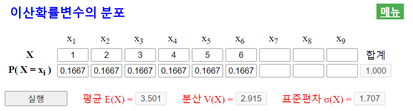 <그림 3.4> 이산확률변수의 분포 자료입력
|
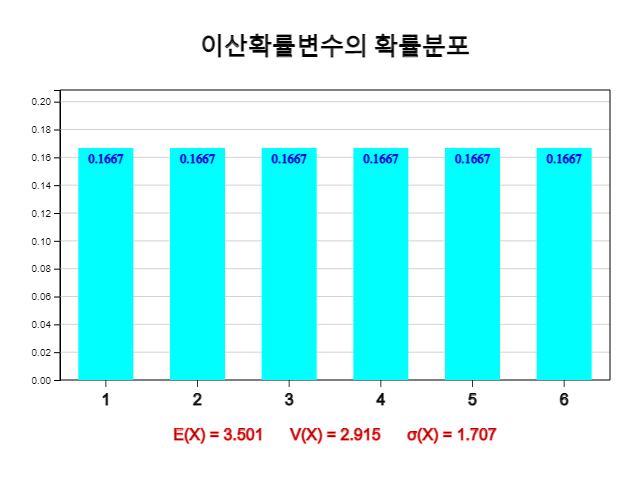
<그림 3.5> 이산확률변수의 확률분포와 평균 분산 계산
⏱ 문제 3.4 |
[문제 3.3]에서 확률변수 \(X\)를 한 개의 동전을 세 번 던져서 앞면이 나오는 횟수로 하여 확률분포를 구하였다. 『eStatH』를 이용하여 이 확률분포에 대한 그래프와 \(X\)의 평균, 분산, 표준편차를 구하라. |
나. \(a X + b\)의 평균과 표준편차
⭐ 생각열기 |
앞의 예제의 동전을 두 번 던지는 시행에서 확률변수 \(X\) = ‘동전의 앞면이 나오는 횟수’는 0, 1, 2의 가능한 값을 가지고 각 값에 대한 확률은 각각 \(\frac{1}{4}, \frac{2}{4}, \frac{1}{4}\) 이다. |
💎 탐구 |
1) 만일 동전의 앞면이 나오는 횟수에서 따라 상금을 각각 100원씩 지급한다면 이 시행에서 얼마만큼의 기댓값을 생각할 수 있고 상금의 분산은 얼마나 될까?
2) 만일 이 게임을 하면 50원을 기본적으로 지급하고, 추가로 동전의 앞면이 나오는 횟수에서 따라 상금을 각각 100원씩 지급한다면 이 시행에서 얼마만큼의 기댓값을 생각할 수 있고 상금의 분산은 얼마나 될까?
|
이 문제는 확률변수 \(X\) = ‘동전의 앞면이 나오는 횟수’의 확률분포를 알 때 1) \(Y = 100X\)의 확률분포와 2) \(Z = 50 + 100X\)의 확률분포를 살펴보는 문제와 같다. 확률변수 \(X\)의 분포는 다음과 같고 \(E(X)\) = 1, \(V(X)\) = 0.5, \(\sigma(X)\) = 0.707이다.
| \(X\) | 0 | 1 | 2 | 합계 |
|---|---|---|---|---|
| \(P(X=x)\) | \(\frac{1}{4}\) | \(\frac{2}{4}\) | \(\frac{1}{4}\) | 1 |
1) 확률변수 \(Y = 100X\)의 확률분포는 다음과 같다.
| \(Y = 100X\) | 0 | 100 | 200 | 합계 |
|---|---|---|---|---|
| \(P(Y = y)\) | \(\frac{1}{4}\) | \(\frac{2}{4}\) | \(\frac{1}{4}\) | 1 |
따라서 \(Y\)의 평균 \(E(Y)\), 분산 \(V(Y)\), 표준편차 \(\sigma(Y)\)는 다음과 같다.
\(E(Y) = 0×\frac{1}{4} + 100×\frac{2}{4} + 200×\frac{1}{4} = 100\)
\(V(Y) = (0-100)^2 ×\frac{1}{4} +(100-100)^2 ×\frac{2}{4} +(200-100)^2 ×\frac{1}{4} = \frac{20000}{4} = 5000 \)
\(\sigma(Y) = \sqrt{5000} = 70.7\)
즉, \(E(Y) = 100 E(X)\), \(V(Y) = 100^2 V(X)\), \(\sigma(Y) = 100 \sigma(X)\)임을 알 수 있다.
2) 확률변수 \(Z = 50 + 100X\)의 확률분포는 다음과 같다.
| \(Z = 50 + 100X\) | 50 | 150 | 250 | 합계 |
|---|---|---|---|---|
| \(P(Y = y)\) | \(\frac{1}{4}\) | \(\frac{2}{4}\) | \(\frac{1}{4}\) | 1 |
따라서 \(Z\)의 평균 \(E(Z)\), 분산 \(V(Z)\), 표준편차 \(\sigma(Z)\)는 다음과 같다.
\(E(Z) = 50×\frac{1}{4} + 150×\frac{2}{4} + 250×\frac{1}{4} = 150\)
\(V(Z) = (50-150)^2 ×\frac{1}{4} +(150-150)^2 ×\frac{2}{4} +(250-150)^2 ×\frac{1}{4} = \frac{20000}{4} = 5000 \)
\(\sigma(Z) = \sqrt{5000} = 70.7\)
즉, \(E(Z) = 50 + 100 E(X)\), \(V(Z) = 100^2 V(X)\), \(\sigma(Z) = 100 \sigma(X)\)임을 알 수 있다. \(X\)에 상수 50을 더한 것은 \(Z\)의 분산에 영향이 없고, \(X\)에 100을 곱한 것은 \(Z\)의 분산이 \(100^2\)만큼 증가하는 것을 알 수 있다.
일반적으로 이산확률변수 \(X\)의 분포가 다음과 같고 평균, 분산, 표준편차가 각각 \(E(X) = \mu\), \(V(X) = \sigma^2\), \(\sigma(X) = \sigma\)라 하자.
| \(X\) | \(x_1\) | \(x_2\) | \(\cdots\) | \(x_n\) | 합계 |
|---|---|---|---|---|---|
| \(P(X=x )\) | \(p_1\) | \(p_2\) | \(\cdots\) | \(p_n\) | 1 |
\(Y = aX + b\)의 확률분포는 다음과 같다.
| \(Y = aX + b\) | \(y_1 = ax_1 + b\) | \(y_2 = ax_2 + b\) | \(\cdots\) | \(y_n = ax_n + b\) | 합계 |
|---|---|---|---|---|---|
| \(P(Y=y )\) | \(p_1\) | \(p_2\) | \(\cdots\) | \(p_n\) | 1 |
따라서 \(Y\)의 평균 \(E(Y)\), 분산 \(V(Y)\), 표준편차 \(\sigma(Y)\)는 다음과 같다.
\(E(Y) = (ax_1 + b)p_1 + (ax_2 + b)p_2 + \cdots + (ax_n + b)p_n \)
\(\qquad \;= a(x_1 p_1 + x_2 p_2 + \cdots + x_n p_n ) + b(p_1 + p_2 + \cdots +p_n )\)
\(\qquad \;= a E(X) + b = a \mu + b\)
\(\qquad \;= a(x_1 p_1 + x_2 p_2 + \cdots + x_n p_n ) + b(p_1 + p_2 + \cdots +p_n )\)
\(\qquad \;= a E(X) + b = a \mu + b\)
\(V(Y) = [(ax_1 + b) - (a\mu + b)]^2 p_1 + [(ax_2 + b)-(a\mu +b)]^2 p_2 + \cdots + [(ax_n + b)-(a\mu + b)]^2 p_n \)
\(\qquad \;= a^2(x_1 - \mu)^2 p_1 +a^2(x_2 - \mu)^2 p_2 + \cdots + a^2(x_n - \mu)^2 p_n\)
\(\qquad \;= a^2 V(X) = a^2 \sigma^2\)
\(\sigma(Y) = \sqrt{V(Y)} = \sqrt{a^2 \sigma^2} = |a| \sigma \)
일반적으로 확률변수 \(X\)의 평균, 분산, 표준편차가 각각 \(E(X) = \mu\), \(V(X) = \sigma^2\), \(\sigma(X) = \sigma\)일 때 \(Y = aX + b\)의 평균, 분산, 표준편차는 다음과 같다.
\(E(Y) = a E(X) + b = a \mu + b\)
\(V(Y) = a^2 V(X) = a^2 \sigma^2\)
\(\sigma(Y) = \sqrt{a^2 \sigma(X)} = |a| \sigma \)
이와 같은 \(Y = aX + b\)의 평균, 분산, 표준편차는 \(X\)가 이산확률변수이거나 연속확률변수이거나 상관없이 성립한다.
✨ \(Y = aX + b\)의 평균, 분산, 표준편차
확률변수 \(X\)와 임의의 두 상수 (\ a, b \)에 대하여 \(Y = aX + b\)의 평균, 분산, 표준편차는 다음과 같다. .
\(E(Y) = a E(X) + b = a \mu + b\)
\(V(Y) = a^2 V(X) = a^2 \sigma^2\)
\(\sigma(Y) = \sqrt{a^2 \sigma(X)} = |a| \sigma \)
3.3 연속확률변수의 확률분포
⭐ 생각열기 |
한 피자가게에 피자를 주문하여 집까지 배달되는 시간을 임의로 30회 조사한 결과가 다음과 같다.
(데이터 3.1) 피자를 주문하여 집까지 배달되는 시간 (단위 분)
|
|
💎 탐구 |
1) 피자가 10분에서 20분 사이에 배달될 확률은 얼마나 될까?
2) 피자가 15분에서 20분 사이에 배달될 확률은 얼마나 될까?
3) 더 세밀한 구간에 피자가 배달되는 확휼은 어떻게 구할까?
|
『eStatH』의 ‘히스토그램 – 도수분포표’를 이용하여 피자배달시간에 대한 히스토그램을 구간을 0에서 시작해서 구간 간격을 10분으로 해서 그리면 다음과 같다. 피자가 10분에서 20분 사이에 배달될 확률은 0.47임을 알 수 있다.
|
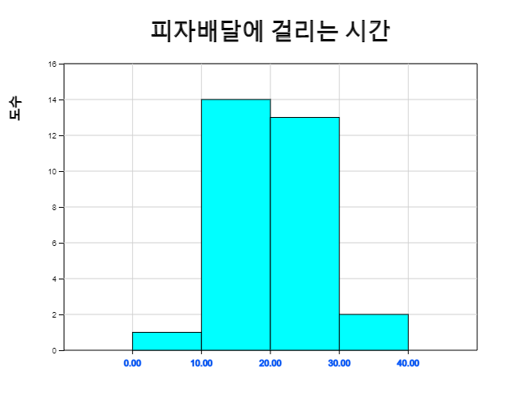
<그림 3.6> 피자배달에 걸리는 시간의 히스토그램 – 구간간격 10분
[표 3.1] 피자배달에 걸리는 시간의 도수분포표 – 구간간격 10분
|
히스토그램의 구간을 5에서 시작해서 구간 간격을 5분으로 다시 그리면 다음과 같다. 피자가 15분에서 20분 사이에 배달될 확률은 0.30임을 알 수 있다.
|
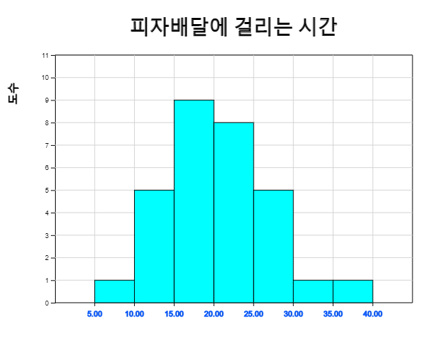
<그림 3.7> 피자배달에 걸리는 시간의 히스토그램 – 구간간격 5분
[표 3.2] 피자배달에 걸리는 시간의 도수분포표 – 구간간격 5분
|
좀 더 세밀한 구간의 확률을 구하기 위해서는 <그림 3.8>과 같은 더 세분화된 히스토그램과 도수분포표를 필요로 한다. 하지만 이러한 히스토그램을 위해서는 더 많은 자료를 수집하여야 하고 매번 다시 히스토그램을 그려 원하는 확률을 계산하는 것은 여간 번거로운 일이 아니다.
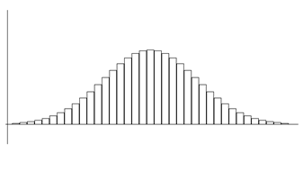
<그림 3.8> 많은 자료를 이용한 히스토그램
우리 주변에서는 위의 히스토그램과 같이 종 모양으로 평균 주변에 자료가 많고 평균을 중심으로 대칭인 형태의 연속확률변수 자료를 많이 관찰할 수 있다. 이러한 형태의 모든 자료들에 대한 확률을 쉽게 구하기 위해 많은 수학자들이 이 분포 형태를 묘사할 수 있는 함수를 찾았다. <그림 3.9>와 같은 모양의 함수인데 이를 정규분포함수라 한다. 3.5절에서 자세히 설명한다.
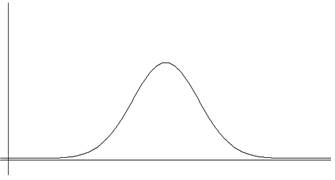
<그림 3.9> 정규분포함수
연속확률변수의 확률밀도함수를 수학적 함수 \(f(x)\)로 표현할 수 있다면 굳이 도수분포표와 히스토그램을 그리지 않고 원하는 확률을 근사적으로 구할 수 있다. 일반적으로 연속확률변수 \(X\) 의 확률밀도함수 \(f(x)\)는 다음과 같은 성질을 갖는다.
✨ 연속확률변수 \(X\) 의 확률밀도함수 \(f(x)\)의 성질
1) \(f(x) \ge 0\)
2) 전체 확률을 더했을 때 1이 되어야 한다. 즉, 함수의 정의구역이 구간 \([\alpha, \beta]\)라면
\(f(x)\)의 정의구역 내의 넓이는 1이다.
\(P( \alpha \le X \le \beta) = \int_\alpha ^\beta f(x)dx = 1 \)
3) 연속확률변수 \(X\)가 정의구역내의 구간 \([a,b]\)에 있을 확률 \(P(a \le x \le b)\)는
\(f(x)\)의 \([a,b]\)사이의 넓이인 정적분으로 구할 수 있다. (<그림 3.10>)
\(P( a \le X \le b) = \int_a ^b f(x)dx \)
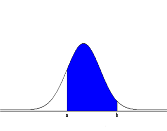
<그림 3.10> 연속형 확률변수 \(X\)가 구간 \([a,b]\)에 있을 확률
🎲 예제 3.5
피자를 주문해서 집에 도착할 때까지 걸리는 시간이 10분에서 30분까지 어느 시간이나 같은 가능성을 갖는다. 확률변수 \(X\)를 ‘피자 배달에 걸리는 시간’이라고 할 때, \(X\)의 확률밀도함수를 구하고 그래프를 그려라. 또 15분에서 20분 사이에 배달될 확률을 구하라.풀이
\(X\)는 10에서 30사이의 어느 수나 같은 가능성을 가지므로 확률밀도함수는 $$ \begin{align} f(x) &= \frac{1}{(30-10)}, 10 \le x \le 30\\ &= 0, 기타 \\ \end{align} $$ 이다. 이를 10에서 30까지의 균등분포라고 하고 균등분포(10,30)으로 표시한다.
15분에서 20분 사이에 배달될 확률을 그림으로 그리면 다음과 같으므로 확률(넓이)의 계산은 (20-15) × (1/20) = 0.25 이다.

<그림 3.11> <그림 3.11> 균등분포(10,30)에서 \(P(15 \le X \le 20)\) 확률
⏱ 문제 3.5
|
연속확률변수 \(X\)의 확률밀도함수가 \(f(x) = 2x, (0 \le x \le 1)\) 일 때 다음을 구하라.
1) \(P(0 \le X \le \frac{1}{4})\) |
⏱ 문제 3.6
|
연속확률변수 \(X\)의 확률밀도함수가 \(f(x) = ax, (0 \le x \le 2)\) 일 때 다음을 구하라. (단 \(a\)는 상수)
1) 상수 \(a\) |
3.4 이항분포
⭐ 생각열기 |
한 공장에서 생산되는 제품의 불량률이 0.1이라고 한다. 세 개의 제품을 검사하였을 때 나타나는 불량품의 수를 \(X\)라고 하자. |
💎 탐구 |
확률변수 \(X\)의 확률분포는 어떻게 될까? |
한 제품을 검사하였을 때 우량품이 나오는 사건을 G, 불량품의 나오는 사건을 B라 하자. 세 개의 제품을 검사하였을 때 표본공간과 불량품의 수 \(X\)의 가능한 값은 0, 1, 2, 3이고 그 확률은 다음과 같다.
| 표본공간 | \(X\) = 불량품의 수 | \(P(X=x)\) |
|---|---|---|
| GGG | 0 | \((0.9)^3\) |
| GGB GBG BGG |
1 | \(3 (0.1)(0.9)^2\) |
| GBB BGB BBG |
2 | \(3 (0.1)^2(0.9)\) |
| BBB | 3 | \( (0.1)^3\) |
여기서 불량품의 수가 0인 경우의 수 1은 \({}_3 C_0\), 1인 경우의 수 3은 \({}_3 C_1\), 2인 경우의 수 3은 \({}_3 C_2\), 3인 경우의 수 1은 \({}_3 C_3\)이므로 \(X\)의 확률밀도함수는 다음과 같이 표시할 수 있다. $$ P(X=x) = {}_3 C_x (0.1)^x (0.9)^{3-x} \quad (x=0,1,2,3) $$ 제품을 검사하여 불량품의 수를 조사하는 위의 문제와 유사한 시행은 우리 주변에서 많이 관찰된다.
- 동전을 5번 던져 앞이 나오는 회수를 조사한다.
- 유권자 20명 중 특정후보에 찬성하는 사람 수를 세어본다.
또 다른 예는 과학관 등에 가면 발견할 수 다음과 같은 기구다. 공을 위에서 떨어뜨려 한 곳에 부딪치면 1/2 확률로 좌측(0점) 또는 우측(1점)으로 떨어지게 하는 기구가 있다. 떨어진 공은 다시 1/2 확률로 좌측 우측으로 떨어진다. 100개의 공을 떨어뜨렸을 때 점수에 대한 분포를 조사해본다.
[Binomial Experiment]
| n = | 1 | 10 | p = | 0 | 1 | ||||
<그림 3.12> 『eStatH』의 이항분표 시뮬레이션
이 문제들의 공통점은 한 시행의 가능한 결과가 두 가지, 즉 {우량품, 불량품}, {앞면, 뒷면},
{찬성, 반대} 등이고 이러한 시행을 여러 번 반복하는 것이다. 하지만 각 실험에서 결과가
나올 확률은 서로 다르다. 이렇게 두 가지 가능한 결과('이항')를 갖는 시행을
베르누이 시행이라고 하는데, 흔히 두 가지 결과 중 관심 있는 결과를 ‘성공’으로
나머지 결과를 ‘실패’라 부른다. ‘성공’의 확률이 \(p\)인 베르누이 시행을 \(n\)번
독립적으로 반복할 때 ‘성공’의 회수를 확률변수 \(X\)라 하면 \(X\)가 가질 수 있는 값은
0, 1, 2, ... ,\(n\) 이고 \(X\)의 확률밀도함수는 다음과 같다.
$$
P(X = x) = {}_n C_x p^x (1-p)^{n-x} \quad (단, \;\; x=0,1,2, ... , n)
$$
이와 같은 확률분포를 이항분포라 하고 기호로 \(B(n,p)\)와 같이 나타낸다. \(q=1-p\)로
표시할 때 이항분포를 표로 나타내면 다음과 같다.
| \(X\) | 0 | 1 | 2 | \(\cdots\) | \(x\) | \(\cdots\) | n | 합계 |
|---|---|---|---|---|---|---|---|---|
| \(P(X=x)\) | \({}_n C_0 q^n \) | \({}_n C_1 pq^{n-1}\) | \({}_n C_2 p^2 q^{n-2}\) | \(\cdots\) | \({}_n C_x p^x q^{n-x}\) | \(\cdots\) | \({}_n C_n p^n\) | 1 |
이 이항분포의 각 확률은 \((q+p)^n\)을 이항정리를 이용하여 전개한 식의 각 항과 같다. $$ (q+p)^n = {}_n C_0 q^n + {}_n C_1 pq^{n-1}+ {}_n C_2 p^2 q^{n-2} + \cdots +{}_n C_x p^x q^{n-x}+ \cdots +{}_n C_n p^n $$ 다음은 여러 가지 n, p값에 대한 이항분포의 그래프이다.
|
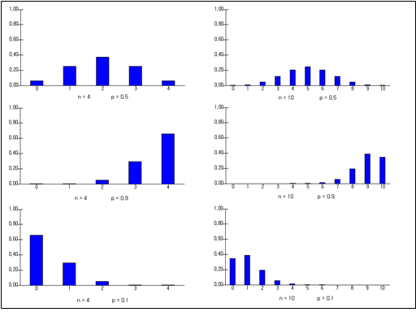 <그림 3.13> 『여러 가지 \(n, p\)값에 대한 이항분포
|
✨ 이항분포
‘성공’인 사건의 확률이 \(p\)인 베르누이 실험을 \(n\)번 독립적으로 반복 시행하였을 때 확률변수 \(X\)를 '성공의 회수(X)'라 하면 \(X\)가 \(x\)일 확률분포는 다음과 같은 이항분포 \(B(n,p)\)이다. $$ f(x) = {}_n C_x p^x (1-p)^{n-x} \quad (단, \;\; x=0,1,2, ... , n) $$
🎲 예제 3.6
『프로야구팀 ‘호랑이’가 올해 시즌에 ‘곰’팀과 앞으로 더 치르어야 할 게임수는 네 게임이다. 호랑이팀이 매 게임 승리할 확률이 60%이다.
1) 확률변수 X = ‘호랑이가 승리하는 게임수’ 의 확률분포를 구하라. 단 비기는 게임은 없다고 가정하자.
2) 『eStatH』을 이용하여 이 확률분포를 구하라.
풀이
이 문제는 매 게임이 ‘승’과 ‘패’의 베르누이 시행이다. 이 베르누이 시행을 네 번 반복한다. 표본공간은 네 게임의 승패에 관한 모든 가능성으로 모두 \(2^4 = 16\)개의 원소가 있다. 승을 O, 패를 X로 표시하여 표본공간을 적어보면 다음과 같다.
S = {‘XXXX’,‘OXXX’,‘XOXX’,‘XXOX’,‘XXXO’,‘OOXX’,‘OXOX’,‘OXXO’, ‘XOOX’,‘XOXO’,‘XXOO’,‘OOOX’,‘OOXO’,‘OXOO’,‘XOOO’,‘XXXX’}
호랑이가 모두 질 사건 {‘XXXX’}의 확률은
(0.4)×(0.4)×(0.4)×(0.4) = \((0.4)^4\)
이다. 호랑이가 한 번 이기고 세 번 질 확률은
(0.6)×(0.4)×(0.4)×(0.4)
이다. 호랑이가 한 번 이길 사건은 네 가지 경우
{‘OXXX’, ‘XOXX’, ‘XXOX’, ‘XXXO’}가 있다. 이 네 가지라는 것은
네 개의 자리가 있을 때 한 자리에 O 를 앉게 하는 경우의 수 \({}_4 C_1\)과 같다.
그러므로 호랑이가 한 번 이길 확률은
\({}_4 C_1 (0.6)(0.4)^3 \)
이다. 호랑이가 두 번 이기고 두 번 질 확률은
(0.6)×(0.6)×(0.4)×(0.4)
이다. 호랑이가 두 번 이길 경우의 수는 \({}_4 C_2\)이므로 호랑이가 두 번 이길 확률은
\({}_4 C_2 (0.6)^2 (0.4)^2 \)
이다. 호랑이가 세 번 이기고 한 번 질 확률은
(0.6)×(0.6)×(0.6)×(0.4)
이다. 호랑이가 세 번 이길 경우의 수는 \({}_4 C_3\)이므로 호랑이가 세 번 이길 확률은
\({}_4 C_3 (0.6)^3 (0.4) \)
이다. 호랑이가 네 번 이길 확률은
(0.6)×(0.6)×(0.6)×(0.6)
이다.
따라서 확률변수 \(X\) = ‘호랑이가 승리하는 게임 수’ 의 확률분포는 다음과 같다.
| \(X\) | 0 | 1 | 2 | 3 | 4 | 합계 |
|---|---|---|---|---|---|---|
| \(P(X=x)\) | \({}_n C_0 (0.4)^4 \) | \({}_n C_1 (0.6)(0.4)^{3}\) | \({}_n C_2 (0.6)^2 (0.4)^{2}\) | \({}_n C_3 (0.6)^3 (0.4)^{1}\) | \({}_n C_4 (0.6)^4 \) | 1 |
『eStatH』의 주메뉴에서 이항분포를 선택하고 \(n\)= 4, \(p\)= 0.6을 입력하고 [실행] 버튼을 누르면 <그림 3.14>과 같은 이항분포 그래프가 나타난다.
[Binomial Distribution]
| n = | 1 | 100 | p = | 0 | 1 |
⏱ 문제 3.7
|
한 공장에서 생산되는 전자 부품의 불량률이 5%이다. 이 부품을 50개 담은 상자가 있을 때 『eStatH』를 이용하여 다음 확률을 구하라.
1) 불량품이 없을 확률은? |
가. 이항분포의 평균과 표준편차
‘성공’의 확률이 \(p\)이고 ‘실패’의 확률이 \(q=1-p\)인 베르누이 시행을 3회 실시하였을 때 ‘성공의 횟수’ \(X\)는 다음과 같은 이항분포이다.
| \(X\) | 0 | 1 | 2 | 3 | 합계 |
|---|---|---|---|---|---|
| \(P(X=x)\) | \({}_3 C_0 \;q^3 \) | \({}_3 C_1 \;pq^{2}\) | \({}_3 C_2 \;p^2 q\) | \({}_3 C_3 \;p^3\) | 1 |
따라서 이 확률분포에 대한 평균 \(E(X)\), 분산 \(V(X)\), 표준편차 \(\sigma(X)\)는 다음과 같다.
\(E(X) = 0×q^3 + 1×3pq^2 + 2×3p^2 q + 3×p^3 = 3p\)
\(V(X) = (0-3p)^2 ×q^3 + (1-3p)^2 ×3pq^2 + (2-3p)^2 ×3p^2 q + (3-3p)^2 ×p^3 = 3pq\)
\(\sigma(X) = \sqrt{3pq} \)
일반적으로 확률변수 \(X\)가 이항분포 \(B(n,p)\)를 따를 때 이항분포표가 다음과 같다고 하자.
| \(X\) | 0 | 1 | 2 | \(\cdots\) | \(x\) | \(\cdots\) | n | 합계 |
|---|---|---|---|---|---|---|---|---|
| \(P(X=x)\) | \({}_n C_0 q^n \) | \({}_n C_1 pq^{n-1}\) | \({}_n C_2 p^2 q^{n-2}\) | \(\cdots\) | \({}_n C_x p^x q^{n-x}\) | \(\cdots\) | \({}_n C_n p^n\) | 1 |
\(X\)의 평균은 \(E(X) = np\)이고, 분산은 \(V(X) = npq\), 표준편차는 \(\sigma(X) = \sqrt{npq}\)이다.
✨ 이항분포의 평균, 분산, 표준편차
확률변수 \(X\)가 이항분포 \(B(n,p)\)를 따를 때,
\(E(X) = np\)
\(V(X) = npq\)
\(\sigma(X) = \sqrt{npq} \) 단, \(q=1-p\)
🎲 예제 3.7
어느 보험회사의 영업사원이 고객을 만나 그 사람을 보험에 가입하게 할 확률은 과거의 경험으로 보아 20％이다. 오늘 아침 영업사원이 10명의 고객을 만날 예정이다. 다음 확률을 직접 계산한 후 『eStatH』를 이용하여 확인하라
1) 세 사람이 보험에 가입할 확률은?
2) 두 사람 이상(≥)이 보험에 가입할 확률은?
3) 평균 몇 사람이 가입하겠는가? 또 그 표준편차는?
풀이
\(n\) = 10, \(p\) = 0.2 인 이항분포이므로
1)의 세 사람이 가입할 확률은 다음과 같다.
\( P(X=3) = {}_10 C_3 (0.2)^3 (1-0.2)^{10-3} = 0.2013 \)
2)는 두 사람 이상이므로 여사건의 확률을 이용하는 것이 좋다.
\( P(X ≥ 2) = 1 - P(X=0) - P(X=1) = 1 - {}_10 C_0 (0.2)^0 (1-0.2)^{10-0} - {}_10 C_1 (0.2)^1 (1-0.2)^{10-1} = 1 - 0.1074 - 0.2684 = 0.6242 \)
3)은 다음과 같다. 단, \(q=1-p\)
\(E(X) = np = 10 × 0.2 = 2\)
\(V(X) = npq = 10 × 0.2 × 0.8 = 1.6 \)
\(\sigma(X) = \sqrt{1.6} = 1.265\)
|
『eStatH』의 ‘이항분포’에서 \(n\) = 10, \(p\) = 0.2를 선택하고 [실행] 버튼을 클릭하면 <그림 3.16>과 같은 그래프가 나타난다. ‘확률표시’를 선택하면 이항분포 확률이 각 막대에 표시되는데 문 1)의 값을 확인할 수 있다. 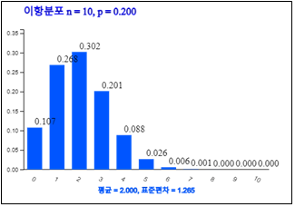 <그림 3.16> \(n\)= 10, \(p\)= 0.2인 이항분포
|
오른쪽의 다음과 같은 이항분포표에서 2)의 P(X ≥ 2) = 0.6242임을 확인할 수 있다.
| \(n = 10\) | \(p = 0.200\) | ||
| 0 | 0.1074 | 0.1074 | 1.0000 |
| 1 | 0.2684 | 0.3758 | 0.8926 |
| 2 | 0.3020 | 0.6778 | 0.6242 |
| 3 | 0.2013 | 0.8791 | 0.3222 |
| 4 | 0.0881 | 0.9672 | 0.1209 |
| 5 | 0.0264 | 0.9936 | 0.0328 |
| 6 | 0.0055 | 0.9991 | 0.0064 |
| 7 | 0.0008 | 0.9999 | 0.0009 |
| 8 | 0.0001 | 1.0000 | 0.0001 |
| 9 | 0.0000 | 1.0000 | 0.0000 |
| 10 | 0.0000 | 1.0000 | 0.0000 |
⏱ 문제 3.8 |
한 대통령 선거에서 특정 후보의 지지율이 40%로 조사되었다. 선거전략의 수립을 위해 오늘 아침 20명의 유권자를 만나 특정후보를 지지하는지 알아볼 예정이다. 다음 확률을 직접 계산한 후 『eStatH』를 이용하여 확인하라. 단 기권은 없다고 가정하자.
1) 20명중 8명이 특정후보를 지지할 확률은? |
\(n\)의 값이 커지면 계산기를 이용하여도 이항분포의 확률을 계산하기가 쉽지 않다. 『eStatH』 에서는 \(n \le 100\)인 경우의 확률을 쉽게 구할 수 있는데 그 이상일 경우에는 평균이 \(np\), 분산이 \(np(1-p)\)인 정규분포를 이용하여 근사적으로 구할 수 있는데 3.5절에서 살펴보자.
나. 큰 수의 법칙
⭐ 생각열기 |
한 개의 주사위를 번 던지는 시행을 생각해 보자. 각각의 눈이 나오는 수학적 확률은 \(\frac{1}{6}\) 이고. 1의 눈이 나오는 회수에 대한 확률변수 \(X\)는 이항분포 \(B(n, \frac{1}{6})\)를 따른다. |
💎 탐구 |
주사위를 \(n\)번 던졌을 때 상대도수 \(\frac{X}{n}\)와 \(\frac{1}{6}\)의 차이를 살펴보자 |
이항분포를 이용하면 1의 눈이 나올 수학적 확률 \(\frac{1}{6}\)이 합리적인 모형임을 알아볼 수 있다. 주사위를 \(n\)번 던졌을 때 상대도수 \(\frac{X}{n}\)와 \(\frac{1}{6}\)의 차이가 매우 작은 값 \(\epsilon\)보다 더 작은 확률은 다음과 같이 표시할 수 있다.
$$ \begin{align} P ( \left | \frac{X}{n} - \frac{1}{6} \right | < \epsilon ) &= P ( \epsilon < \frac{X}{n} - \frac{1}{6} < \epsilon ) \\ &= P ( \frac{1}{6} - \epsilon < \frac{X}{n} < \frac{1}{6} + \epsilon ) \\ &= P \left [ n( \frac{1}{6} - \epsilon )< X < n( \frac{1}{6} + \epsilon ) \right] \end{align} $$
만일 \(\epsilon\)이 0.1이라면 위 식은 $$ P ( \left | \frac{X}{n} - \frac{1}{6} \right | < 0.1 ) = P \left [ n( \frac{1}{6} - 0.1 ) < X < n( \frac{1}{6} + 0.1 ) \right] $$ 이다. 주사위 던진 회수 \(n\)이 10회, 20회, 50회, 100회라면 위 식은 다음과 같고 『eStatH』의 이항분포 \(B(n, \frac{1}{6})\)를 이용하여 확률을 구할 수 있다.
|
\(n = 10\)
\(P \left [ 10( \frac{1}{6} - 0.1 ) < X < 10( \frac{1}{6} + 0.1 ) \right] \) |
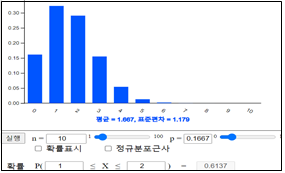
<그림 3.17> 『eStatH』의 \(B(10,0.1667)\)
|
|
\(n = 20\)
\(P \left [ 20( \frac{1}{6} - 0.1 ) < X < 20( \frac{1}{6} + 0.1 ) \right] \) |
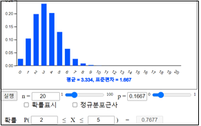
<그림 3.18> 『eStatH』의 \(B(20,0.1667)\)
|
|
\(n = 50\)
\(P \left [ 50( \frac{1}{6} - 0.1 ) < X < 50( \frac{1}{6} + 0.1 ) \right] \) |

<그림 3.19> 『eStatH』의 \(B(50,0.1667)\)
|
|
\(n = 100\)
\(P \left [ 100( \frac{1}{6} - 0.1 ) < X < 100( \frac{1}{6} + 0.1 ) \right] \) |
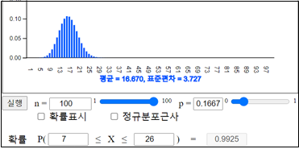
<그림 3.20> 『eStatH』의 \(B(100,0.1667)\)
|
위의 결과를 보면 \(n\)이 증가함에 따라 확률 \( P ( \left | \frac{X}{n} - \frac{1}{6} \right | < 0.1 )\)가 점차로 1에 가까워짐을 알 수 있다.
이와 같은 실험은 \(\epsilon\)= 0.1보다 좀 더 작은 0.01, 0.001, .. 등에서도 성립한다. 즉 이는 주사위를 던지는 횟수 \(n\)이 충분히 크면 1의 눈이 나오는 상대도수 \(\frac{X}{n}\)가 수학적 확률 \(\frac{1}{6}\)에 가까워짐을 의미한다. 이를 큰수의 법칙이라 한다.
✨ 큰수의 법칙
한 베르누이 시행에서 ‘성공’의 사건이 일어날 수학적 확률이 \(p\)일 때 ‘성공’사건이 일어날 횟수를 확률변수 \(X\)라고 하면 상대도수 \(\frac{X}{n}\)는 \(n\)의 값이 커짐에 따라 수학적 확률 \(p\)에 가까워진다.
<그림 3.21>은 『eStatH』를 이용하여 \(n\) = 1000까지 \(\epsilon\) = 0.05로 하여 확률 \( P ( \left | \frac{X}{n} - \frac{1}{6} \right | < \epsilon )\)이 1에 점차로 가까워지는 것을 보여주는 그래프이다. 슬라이드바를 이용하여 \(p\)와 \(\epsilon\)을 바꾸어 가며 실험할 수 있다.
[]
\(X \; \) : \(B(n,p)\) \( \quad P(\; \left| \frac{X}{n} - p \right | \,<\, \epsilon ) \;🠖\; 1 \)
| p = | 0 | 1 | ε = | 0.01 | 0.10 |
<그림 3.21> 『eStatH』를 이용한 큰 수의 법칙 실험
3.5 정규분포
⭐ 생각열기 |
한 피자가게에 피자를 주문하여 집까지 배달되는 시간을 임의로 많이 조사하여 히스토그램을 그린 결과가 다음과 같다.
<그림 3.22> 많은 피자배달 자료를 이용한 히스토그램
|
💎 탐구 |
1) 이러한 히스토그램의 특징은 무엇인가? |

우리 주변의 연속확률변수의 자료 중에서는 위의 히스토그램과 같이 종을 엎어 놓은 모양으로 평균 근처에 자료가 많이 몰려있고, 평균에서 멀어질수록 자료 수가 적으며, 평균을 중심으로 대칭형인 형태가 많이 관찰된다. 이러한 형태의 모든 자료들에 대한 확률을 쉽게 구하기 위해 많은 수학자들이 이 분포 형태를 묘사할 수 있는 함수를 찾았다. 이 수학적 함수를 이용하면 굳이 도수분포표나 히스토그램을 그리지 않고 원하는 확률을 근사적으로 구할 수 있다.
드 므와브르(Abraham de Moivre(1667-1754))에 의해 이와 같은 함수를 처음 발견되었고, 그 후 독일의 수학자 가우스(Carl Friedrich Gauss(1777-1855))에 의해 물리학과 천문학 등에 폭 넓게 응용되었다. 이 함수를 정규분포 확률밀도함수 또는 가우스분포함수라고 부르는데 함수식과 그래프는 다음과 같다.
| $$ f(x) = \frac{1}{\sqrt{ 2\pi} \sigma } exp \left[ - \frac{(x-\mu)^2} {2 \sigma^2} \right] $$ \(\qquad - ∞ < x < ∞ \) |

<그림 3.23> 정규분포 확률밀도함수
|
이 함수에서 \(\mu\)는 상수, \(\sigma\)는 양의 상수, \(e\)는 \(2.71828\cdots\)인 무리수이다. 이 확률밀도의 평균과 표준편차는 각각 \(\mu\)와 \(\sigma\)이다. 확률변수 \(X\)가 평균 \(\mu\), 표준편차 \(\sigma\), 즉 분산이 \(\sigma^2\)인 정규분포를 따를 때 기호로 \(N(\mu, \sigma^2 )\)로 표시하기도 한다.
<그림 3.24>는 평균과 분산이 서로 다른 세 정규분포 \(N(-2, 0.5^2 )\), \(N(0, 1)\), \(N(2, 2^2 )\)를 같이 그려본 것이다. 평균을 중심으로 모두 대칭이고, 분산이 커지면 정규분포는 평평해지고, 분산이 작아지면 뾰족해 지는 것을 관찰할 수 있다. 이는 전체 넓이가 1이 되어야하기 때문이다.
[ ]
| N ( | , | ² | ) | |||||
| -10 | 10 | 0.1 | 10 | |||||
| N ( | , | ² | ) | |||||
| -10 | 10 | 0.1 | 10 | |||||
| N ( | , | ² | ) | |||||
| -10 | 10 , | 0.1 | 10 | |||||
| [Reference] | Wikipedia | Wolfram | StatTrek | KhanAcademy |
<그림 3.24> 세 정규분포 \(N(-2, 0.5^2 )\), \(N(0, 1)\), \(N(2, 2^2 )\)
<그림 3.25>는 평균이 서로 다르고 분산이 모두 1인 세 정규분포 \(N(-3, 1)\), \(N(0, 1)\), \(N(3, 1)\)를 같이 그려본 것이다. 평균이 다르면 같은 모양의 그래프가 수평으로 이동된다.

<그림 3.25> 세 정규분포 \(N(-3, 1)\), \(N(0, 1)\), \(N(3, 1)\)
|
<그림 3.26>은 평균이 모두 0이고 분산이 서로 다른 세 정규분포 \(N(0, 0.5^2 )\), \(N(0, 1)\), \(N(0, 3^2 )\)를 같이 그려본 것이다. 평균 0을 중심으로 모두 대칭이고, 분산이 커지면 정규분포는 평평해지고, 분산이 작아지면 뾰족해 지는 것을 관찰할 수 있다.

<그림 3.26> 세 정규분포 \(N(0, 0.5^2 )\), \(N(0, 1)\), \(N(0, 3^2 )\)
|
정규분포의 특징을 요약하면 다음과 같다.
1) 직선 \(x = \mu\)에 대하여 대칭인 종모양의 곡선이고 점근선은 \(x\)축이다.
따라서 평균의 왼쪽과 오른쪽의 확률은 각각 0.5이다.
2) \(x = \mu\)일 때, 최댓값은 \(\frac{1}{\sqrt{2 \pi} \sigma}\)이다.
3) \(\sigma\)의 값이 일정할 때, \(\mu\)의 값이 변하면 대칭축의 위치만 바뀌고 곡선의 모양은 같다.
4) \(\mu\)의 값이 일정할 때, \(\sigma\)의 값이 커지면 곡선은 낮아지고 넓게 퍼지고,
\(\sigma\)의 값이 작아지면 곡선은 높아지고 뾰족해진다.
5) \(y = f(x)\) 그래프와 \(x\)축 사이의 넓이는 1이다.
가. 정규분포에서의 확률계산
정규분포는 현실에 제일 많이 이용되는 분포인데 확률변수 \(X\)의 구간 \([a, b]\)의 확률계산을 많이 필요로 하게 된다. 앞에서 설명하였듯이 \(X\)가 \(N(\mu, \sigma^2 )\)을 따를 때 구간 \([a, b]\)의 확률 \(P(a \le X \le b)\)는 <그림 3.27>의 색으로 칠하여진 부분과 같이 x축과 \(a\)와 \(b\)사이로 둘러싸이는 곡선 \(f(x)\)의 면적이다.

<그림 3.27> 정규분포의 확률 \(P(a \le X \le b)\)
수학적으로 이 면적은 다음과 같은 정적분을 구하여야 하는데 함수 \(f(x)\)가 적분 불능이어 컴퓨터를 이용하여야 가능하다. $$ P(a \le X \le b) = \int_a ^b \frac{1}{\sqrt{ 2\pi} \sigma } exp \left[ - \frac{(x-\mu)^2} {2 \sigma^2} \right] dx $$ 컴퓨터를 이용하여 구한 구간 \([\mu － \sigma, \mu + \sigma]\)의 확률은 0.682, 구간 \([\mu － 2 \sigma, \mu + 2 \sigma]\)의 확률은 0.954, 구간 \([\mu － 3 \sigma, \mu + 3 \sigma]\)의 확률은 0.997이 된다. 즉, 정규분포는 평균주위에 대부분의 값을 가지며, 평균에서 좌우로 표준편차의 3배 이상 떨어진 값은 거의 없다.
확률변수 \(X\)가 \(N(\mu, \sigma^2 )\)일 때 \(Z = \frac{X - \mu}{\sigma}\)변환을 하면, \(Z\)는 평균이 0이고, 표준편차가 1인 정규분포 \(N(0,1)\)을 따르게 된다. 이 사실은 \(N(0,1)\)인 분포의 모든 확률을 구할 수 있다면, 임의의 정규분포도 확률을 구할 수 있음을 뜻한다. 그래서 \(N(0,1)\)을 특히 표준정규분포 또는 \(Z\)분포라 한다. 그리고 임의의 확률변수 \(X\)를 \(Z\)로 바꾸어 주는 변환 \(Z = \frac{X - \mu}{\sigma}\)를 표준화 변환이라고 부른다.
✨ 표준화 변환
확률변수 \(X\)가 평균이 \(\mu\)이고 분산이 \(\sigma^2\)인 정규분포 \(N(\mu, \sigma^2 )\)일 때 표준화 변환
\(\qquad Z = \frac{X - \mu}{\sigma}\)
는 평균이 0 이고, 표준편차가 1인 정규분포 \(N(0,1)\)을 따른다.
표준정규분포함수 \(N(0,1)\)인 경우, 여러 가지 실수값 \(z\)에 대해 왼쪽 끝에서 \(z\)까지의 확률 \(P(Z \le z)\)를 구하여 표를 만들어 놓았는데 이를 표준정규분포표라 한다. 다음 표는 『eStatH』를 이용하여 구한 표준정규분포표의 일부이다.
[표 3.3] 『eStatH』의 표준정규분포표
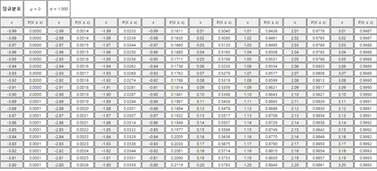
『eStatH』에서는 <그림 3.28>과 같이 어떠한 정규분포 확률변수의 구간 \([a, b]\)에 대한 \(P(a \le X \le b)\) 확률계산과, 주어진 확률 \(p\)에 대한 백분위수 (즉, \(P(X \le x) = p\))가 되는 백분위수 \(x\)를 쉽게 계산할 수 있다.
[Normal Distribution]
Mean μ= Std Dev σ=
<그림 3.28> 『eStatH』에서 정규분포 확률계산
『eStatH』에서 구간의 확률은 \(\mu - 4 \sigma\)에서 \(\mu + 4 \sigma\)까지 계산할 수 있다. \(X\)가 \(\mu - 4\sigma\)보다 작든지 \(\mu + 4\sigma\)보다 큰 경우에 확률은 0.0000보다 작아 0.0000으로 표시된다. [표 3.4]는 『eStatH』 표준정규분포의 백분위수표이다.
[표 3.4] 『eStatH』의 표준정규분포 백분위표

🎲 예제 3.9
\(Z\)가 표준정규확률변수일 때 표준정규분포표를 이용하여 다음의 확률을 구하라. 그리고 『eStatH』를 이용하여 확률을 구하라.
1) \(P(Z ≤ 1.96)\)
2) \(P(-1.96 ≤ Z ≤ 1.96)\)
3) \(P(Z ≥ 1.96)\)
풀이
1) 표준정규분포표에서 이 확률은 0.975 임을 알 수 있다
2) \(P(-1.96 ≤ Z ≤ 1.96) = P(Z ≤ 1.96) - P(Z ≤ -1.96) = 0.975 - 0.025 = 0.95\)
3) \(P(Z ≥ 1.96) = 1 - P(Z ≤ 1.96) = 1 - 0.975 = 0.025 \)
|
『eStatH』를 이용하면 문 1)은 그래프 화면 밑의 선택사항에서 두 번째 왼쪽 확률을 선택하고 1.96을 입력한 후 [실행] 버튼을 클릭한다. 같은 방법으로 문 2)는 그래프 화면 밑의 첫 번째를 선택하고 구간 -1.96, 1.96을 입력하여 계산하고, 문 3)은 그래프 화면 밑의 세 번째 우측 확률을 선택한 후 1.96을 입력하여 계산한다. |
🎲 예제 3.10
\(Z\)가 표준정규확률변수일 때 다음 식을 만족하는 \(x\)를 구하라. 그리고 『eStatH』를 이용하여 확률을 구하라.
1) \(P(Z ≤ x) = 0.90\)
2) \(P(-x ≤ Z ≤ x) = 0.99\)
3) \(P(Z ≥ x) = 0.05 \)
풀이
1) 표준정규분포표에서 이 \(x\)는 대략 1.28임을 알 수 있다
2) 양쪽 끝이 0.005 가 되는 \(x\)는 2.575 이다.
3) \(P(Z ≤ x) = 0.95\)인 문제와 같으므로 표에서 \(x\)는 1.645 이다.
|
『eStatH』를 이용하면 문 1)은 그래프 화면 밑의 선택사항 다섯 번째에서 오른쪽 박스에 p = 0.90을 입력한 후 [실행] 버튼을 클릭한다. 정확한 90% 분위수가 1.2818임을 알 수 있다. 2)는 그래프 화면 밑의 선택사항 네 번째에서 오른쪽 박스에 p = 0.99를 입력한 후 [실행] 버튼을 클릭한다. 정확한 양쪽형 분위수가 –2.5758과 2.5758임을 알 수 있다 3)은 그래프 선택사항 여섯 번째에서 오른쪽 박스에 p = 0.05를 입력한 후 [실행] 버튼을 클릭한다. 우측 5% 분위수가 1.6449임을 알 수 있다. |
⏱ 문제 3.10 |
Z가 표준정규확률변수일 때 표준정규분포표를 이용하여 다음의 확률을 구하라. 그리고 『eStatH』를 이용하여 확률을 구하라.
1) \(P(-1 ≤ Z ≤ 1)\) |
⏱ 문제 3.11 |
Z 가 표준정규확률변량일 때 다음 식을 만족하는 x 를 구하라. 그리고 『eStatH』를 이용하여 확률을 구하라.
1) \(P(Z ≤ x) = 0.90 \) |
자주 이용되는 표준정규분포의 구간 확률 몇 가지는 기억을 하는 것이 좋다. <그림 3.29>는 표준정규분포의 왼쪽에서부터 누적확률이 95%, 97.5%, 99.5% 되는 백분위수를 보여 주고 있고, <그림 3.30>은 양쪽 끝 부분을 똑 같이 제외하였을 때 가운데 구간의 확률이 95%, 99%되는 값을 보여 주고 있다.
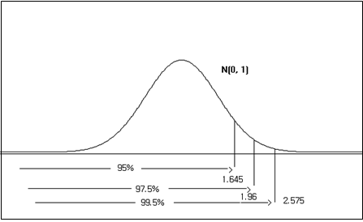
<그림 3.29> 표준정규분포에서 누적확률이 95%, 97.5%, 99.5% 되는 값,
즉, \(\small P(Z \le 1.645) = 0.95, P(Z \le 1.96) = 0.975, P(Z \le 2.575) = 0.995\)
즉, \(\small P(Z \le 1.645) = 0.95, P(Z \le 1.96) = 0.975, P(Z \le 2.575) = 0.995\)
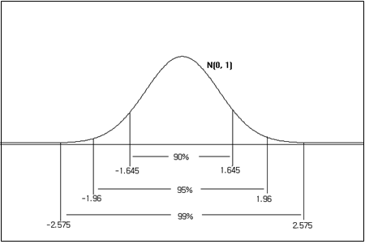
<그림 3.30> 표준정규분포에서 양쪽 끝을 제외한 확률이 95%, 99%되는 값.
즉, \(\small P(-1.96 \le Z \le 1.96) = 0.95, P(-2.575 \le Z \le 2.575) = 0.99\)
즉, \(\small P(-1.96 \le Z \le 1.96) = 0.95, P(-2.575 \le Z \le 2.575) = 0.99\)
표준정규분포표를 이용하면 일반적인 정규분포의 확률을 구할 수 있다. \(X\)가 평균이 \(\mu\), 분산이 \(\sigma^2\)인 정규분포일 때, \(\frac{X-\mu}{\sigma}\)는 표준정규분포를 따른다. 따라서 \(X\)의 구간 \([a, b]\)의 확률 \(P(a \le X \le b)\)는 표준정규분포에서 구간 \([\frac{a-\mu}{\sigma}, \frac{b-\mu}{\sigma}]\)의 확률을 구하면 된다.
✨ 정규분포에서 구간 \([a, b]\)의 확률
확률변수 \(X\)가 평균이 \(\mu\), 분산이 \(\sigma^2\)인 정규분포일 때, 구간 \([a, b]\)의 확률 \(P(a \le X \le b)\)는 다음과 같다 $$ P(a \le X \le b) = P(\frac{a-\mu}{\sigma} \le Z \le \frac{b-\mu}{\sigma} ) $$
🎲 예제 3.11
통계학 중간시험 성적 X가 평균이 70점, 표준편차가 10인 정규분포를 따를 때 다음의 확률을 구하라. 『eStatH』를 이용하여 계산한 값을 확인하라.
1) \(P(X \le 94.3)\)
2) \(P(X \ge 57.7)\)
3) \(P(57.7 \le X \le 94.3)\)
풀이
각 문제의 확률 계산은 다음과 같다
1) \( P(X \le 94.3) = P( \frac{X-70}{10} \le \frac{94.3-70}{10}) = P(Z \le 2.43) = 0.9925 \)
2) \( P(X \ge 57.7) = P( \frac{X-70}{10} \ge \frac{57.7-70}{10} ) = P(Z \ge -1.23) = 0.8907 \)
3) \( P(57.7 \le X \le 94.3) = P( \frac{57.7-70}{10} \le \frac{X-70}{10} \le \frac{94.3-70}{10} ) = P(-1.23 \le Z \le2.43) = 0.8832 \)
|
『eStatH』를 이용하여 일반적인 정규분포 확률을 구하려면 <그림 3.31>의 화면에서 먼저 평균을 70, 표준편차를 10으로 입력한다. 문 1)은 그래프 화면 밑의 선택사항 두 번째에 구간값 94.3을 입력한 후 [실행] 버튼을 클릭한다. 유사한 방법으로 문 2)는 선택사항 세 번째에 57.7을 입력하여 계산하고 문 3)은 선택사항 첫 번째에 구간을 [57.7, 94.3]으로 입력한 후 [실행] 버튼을 클릭한다. 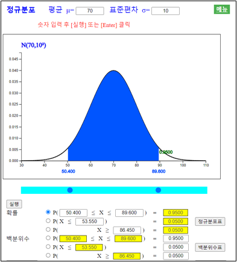 <그림 3.31> 일반적인 정규분포에서 확률 계산
|
🎲 예제 3.12
[예제 3.11]에서 다음 백분위수를 구하라. 그리고 『eStatH』를 이용하여 백분위수를 구하라.
1) 중간시험 성적의 95% 백분위수는?
2) 중간시험 성적의 양쪽형 95% 백분위수는?
풀이
1) 표준정규분포에서 \(P(Z \le z\)인 백분위수 \(z\)는 1.645이므로 \(N(70, 10^2)\)인
정규분포의 백분위수는 70 + 1.645 × 10 = 86.45이다.
2) 양쪽형 95% 백분위수는 양 끝 확률의 합이 5%이므로 왼쪽 끝에서부터의 97.5% 백분위수를
먼저 구하면 된다. 표준정규분포에서 \(P(z \le Z \le z\)인 양쪽형 백분위수 \(z\)는
1.960이므로 \(N(70, 10^2)\)인 정규분포의 양쪽형 95% 백분위수 구간
[70 – 1.96 × 10, 70 + 1.96 × 10] 즉, [50.4, 89.6] 이 된다.
|
『eStatH』를 이용하여 일반적인 정규분포 확률을 구하려면 <그림 3.32>의 화면에서 먼저 평균을 70, 표준편차를 10으로 입력한다. 문 1)은 그래프 화면 밑의 선택사항 다섯 번째의 오른쪽 박스에 0.95를 입력하고 [실행] 버튼을 누르면 95% 백분위수 86.4485가 나타난다. 문 2)는 그래프 화면 밑의 선택사항 네 번째의 오른쪽 박스에 0.95를 입력하고 [실행] 버튼을 누르면 양쪽형 95% 백분위수 [50.4004, 89.5996]이 나타난다.
<그림 3.32> 일반적인 정규분포에서 백분위수 계산
|
⏱ 문제 3.12 |
참외의 무게가 평균이 250g이고 표준편차가 12g인 정규분포를 따른다고 한다. 『eStatH』를 이용하여 계산을 확인하라.
1) 참외의 무게가 260g보다 작을 확률을 구하라. |
나. 이항분포의 정규분포 근사
이항분포에서 \(n\)이 큰 경우에 확률계산은 부록의 표나 『eStatH』를 이용하여도 구할 수 없다. 이러한 경우에는 이항분포 는 평균이 \(np\), 분산이 \(np(1-p)\)인 정규분포를 이용하여 근사적으로 구할 수 있다. <그림 3.3>은 n = 50, p = 0.5인 이항분포를 정규분포로 근사하여본 그래프이다.
|
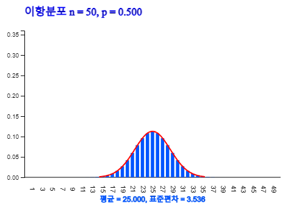
<그림 3.33> \(n\) = 50, \(p\) = 0.5인 이항분포를 정규분포로 근사하여 본 그래프
|
🎲 예제 3.13
한 공장에서 생산되는 제품의 불량률이 5％라고 한다. 어느 날 제품 100개를 표본 추출하였을 때 다음 확률을 구하리.
1) 불량품이 2개 이하일 확률은?
2) 불량품이 3개에서 7개일 확률은?
풀이
불량품의 개수를 \(X\)라 하면 \(X\)는 \(n\) = 100, \(p\) = 0.05 인 이항분포이다. 이렇게 \(n\)이 큰 경우에는 정규분포를 이용하여 근사적으로 확률계산을 한다. 이 이항분포의 평균은 \(np\) = 100×0.05 = 5 이고, 분산은 \(np(1-p)\) = 100×0.05×(1-0.05) = 4.75 이다. 따라서 정규분포 \(N(5,4.75)\)를 이용하여 확률 계산을 하면 다음과 같다.
1) \(P(X \le 2) = P(Z \le \frac{2-5}{\sqrt {4.75}} ) = P(Z \le 1.376) = 0.0845\)
2) \(P(3 \le X \le 7) = P( \frac{3-5}{\sqrt {4.75}} \le Z \le \frac{7-5}{\sqrt {4.75}} ) = P(-0.918 \le Z \le 0.918) = 0.642\)
|
⏱ 문제 3.13 |
한 대통령 선거에서 특정 후보의 지지율이 40%로 조사되었다. 선거 전략의 수립을 위해 오늘 100명의 유권자를 만나 특정후보를 지지하는지 알아볼 예정이다. 다음 확률을 직접 계산한 후 『eStatH』를 이용하여 확인하라. 단 기권은 없다고 가정하자.
1) 100명중 40명 이상(≥) 50명 이하(≤)가 지지할 확률은? |
연습문제
*** 답을 선택한 후 [제출] 버튼을 누르세요
3.1 다음에서 확률분포함수로 적당한 것은?
3.2 다음에서 확률분포함수의 성질이 아닌 것은?
3.3 변량 X가 0, 1, 2, 3의 값을 취하고, 확률함수 f(x) = \(\frac{x}{6}\)일 때, X의 평균값은?
3.4 연속확률변량 X의 모든 값에서 정의된 확률밀도함수 f(x)에 대해서 다음 중 틀린 것은?
3.5 확률변량 X의 확률분포가 다음과 같을 때 평균 E(X)와 표준편차 σ(X)의 값은?
| \(X\) | 0 | 1 | 2 | 합계 |
|---|---|---|---|---|
| \(P(X=x)\) | \(\frac{3}{10}\) | \(\frac{6}{10}\) | \(\frac{1}{10}\) | 1 |
3.6 1개의 주사위를 던져 나오는 눈은 1부터 6까지이다. 나오는 눈을 확률변량 X라고 할 때, X의 기대값 E(X)를 구하면 얼마인가?
3.7 주사위를 한 개 던져 나온 수의 제곱의 점수를 얻을 때 점수의 기대값은?
3.8 기대값 E(X)=5, \(E(X^2)\)=25일 때, 분산 V(X)는 얼마인가?
3.9 한 확률변량의 수치들에 각각 5배를 하였을 때 그 표준편차는?
3.10 어떤 학급에서 시험을 본 결과 평균이 24점, 표준편차가 3점이었다. 성적이 나빠 학급의 모든 학생에게 성적을 2배하여 10점을 더하여 주었다. 이때, 이 학급의 평균과 표준편차를 구하면?
3.11 X의 평균이 20일 때, Y=2X+3의 관계가 있는 Y의 평균을 구하면?
3.12 X의 분산이 2일 때, Y=2X＋1의 관계가 있는 Y의 분산은 얼마인가?
3.13 다음 중 틀린 것은?
3.14 이항분포 \(B(100, \frac{1}{6})\)에서 변량 X의 평균과 분산은?
3.15 이항분포 \(f(x) = {}_4 C_x (0.2)^x (1-0.2)^{4-x}\)를 따르는 확률변량 X의 분산은?
3.16 선다형 문제가 10문제 있다. 한 문제가 4가지 답 중 단 하나가 옳은 답이라고 한다. 짐작으로 10문제를 답할 때 4개가 정답일 확률은 얼마인가?
3.17 정규분포의 성질에 의하면 \(\mu ± 3 \sigma \) 사이의 값을 취할 확률은?
3.18 취직 시험이 있었다. 점수가 450과 500사이인 사람은 그 직업에 적당하다고 한다. 만일 평균점수가 400이고, 표준편차가 50인 정규분포를 이룬다면 그 직업에 적당하다고 생각되는 점수는 몇 %에 해당하는가?